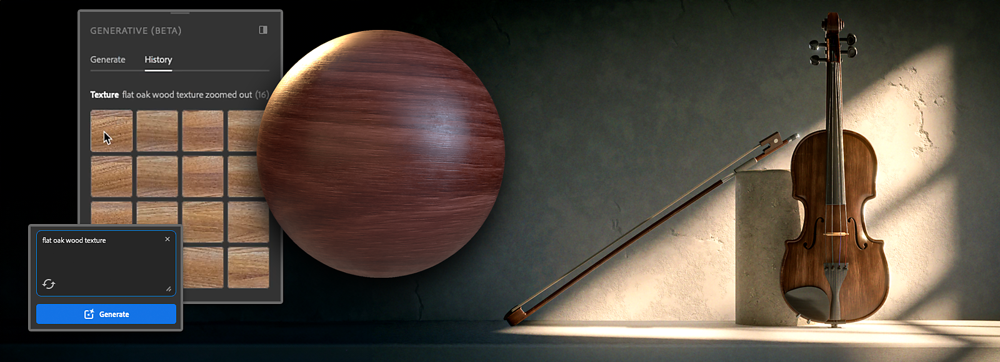

Open the Generative (Beta) panel from the left-hand toolbar.
Substance 3D Sampler helps you iterate quickly and try out new ideas easily with three generative features currently in beta, Text-to-Texture, Text-to-Pattern and Image-to-Texture.

Text-to-Texture allows you to quickly try out ideas you have in order to generate textures from a text prompt.
To use Text-to-Texture:
Open the Generative (Beta) panel from the left-hand toolbar.
Choose “Texture” in the Type dropdown list.
Write a text prompt that describes the texture you want to create.
Use Generate to begin generating textures. Each use of the feature will generate four variations.
You can either drag-and-drop the result you want in the 3D or 2D views to open the material creation template or add it to the layers via the dedicated button. You can also add the result to your Assets to find it easily later.
You can then use the result as you would with any other texture, for example run Image-to-Material and add additional filters on top of it.
Text-to-Pattern allows you to quickly generate patterns from a text prompt, so they can be applied on any surface you like.
To use Text-to-Pattern:
Open the Generative (Beta) panel from the left-hand toolbar.
Choose “Pattern” in the Type dropdown list.
Write a text prompt that describes the pattern you want to create.
Use Generate to begin generating patterns. Each use of the feature will generate four variations.
You can add it as an input of a pattern filter or directly to the layers via the dedicated buttons. You can also add the result to your Assets library to find it easily later.
Image-to-Texture creates four propositions of square and tiling textures from any reference image, no matter the ratio. It can allow you to generate variations of textures you already have, or to create ready-to-use textures from reference images you own.
To use Image-to-Texture:
Open the Generative (Beta) panel from the left-hand toolbar.
Choose “Texture” in the Type dropdown list.
Drag-and-drop your image in the text field or click on the “Add image” icon to open your file explorer and select the image you want to use as reference.
Use Generate to begin generating textures inspired by your reference image. Each use of the feature will generate four variations.
You can either drag-and-drop the result you want in the 3D or 2D views to open the material creation template or add it to the layers via the dedicated button. You can also add the result to your Assets to find it easily later.
Add to the input field words or expressions that describe the texture or pattern you want to generate. Being specific will give you more control over the generated results.
To exclude one or several specific prompts, you can add up to 10 words or expressions to avoid while processing your prompt. Write “--no” before the words or expressions you want to exclude.
You can also use the Samples in the Generative (Beta) panel to get started exploring prompt ideas.
The Sampler generative features do not use credits while the features are in beta.
Please see the generative credit FAQ for the latest information on how generative credits work across Adobe tools.